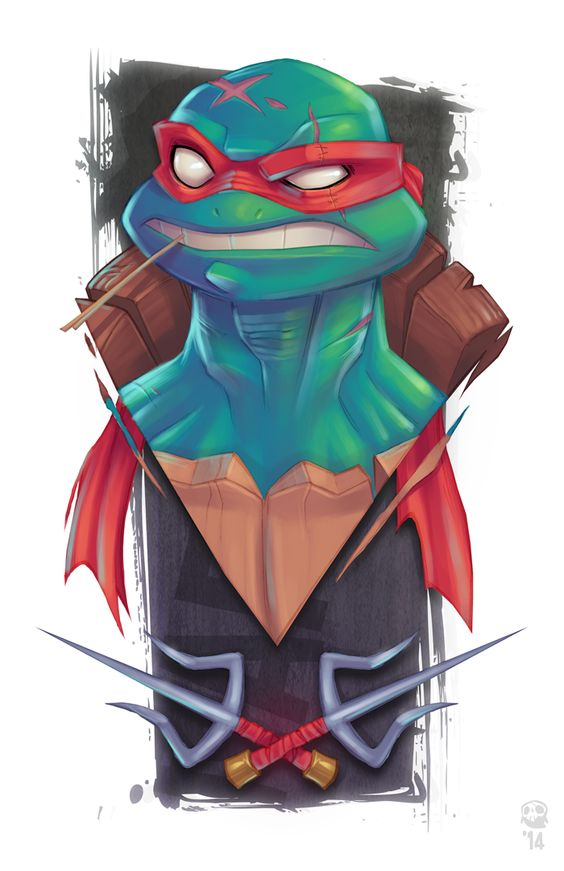
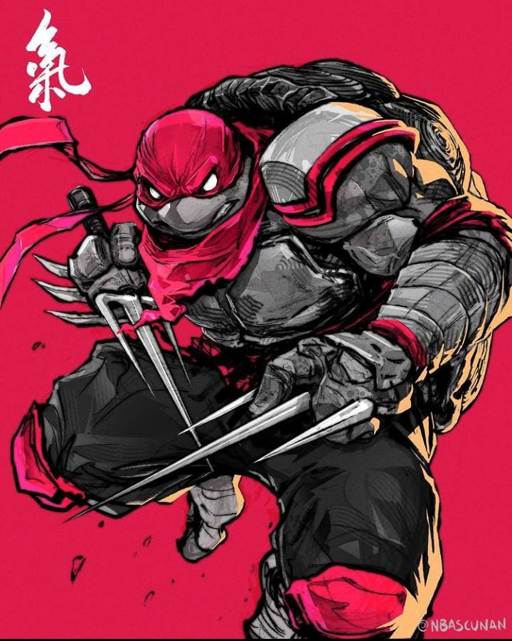
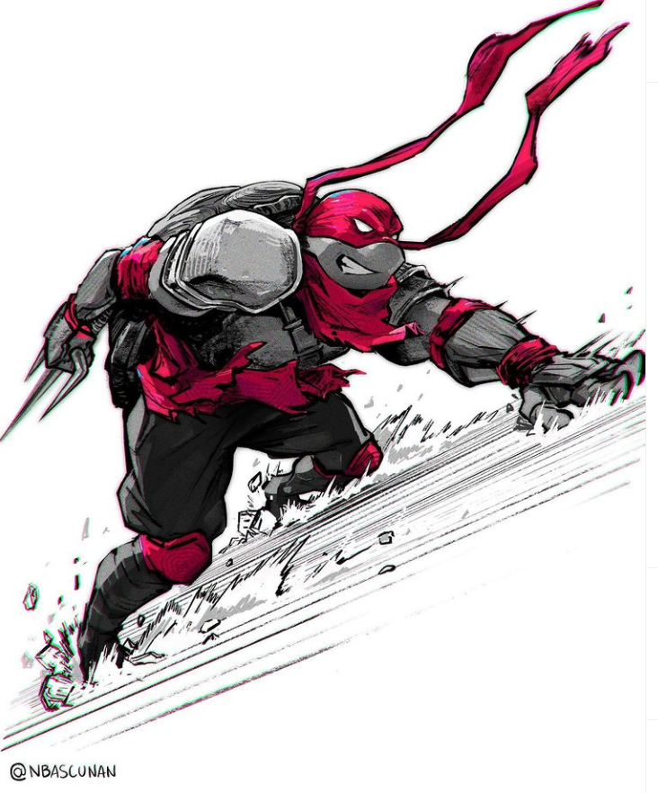

O Malvadão!
O bad boy da equipe, Raphael usa uma máscara vermelho-escura e empunha um par de Sai .
Ele é fisicamente forte, tem uma natureza agressiva e raramente hesita em desferir o primeiro golpe.
Ele é muitas vezes representado com sotaque de Nova York. Sua personalidade pode ser feroz e sarcástica, e muitas vezes proporciona um humor sem expressão.
Ele é muito leal aos seus irmãos e sensei. Ele foi nomeado inspirado no pintor e arquiteto italiano do Renascimento, Rafael.
Fonte: Wikipedia


Sai
Sai (em Chinês: 釵) é uma arma usada em alguns estilos sínicos de wushu, mas principalmente correlacionado a uma arte marcial nativa de Oquinaua, o kobudo,
pelo que se acreditava ser originário dessa ínsula.
Todavia, pesquisas recentes informaram que é uma arma tipica do leste da China, utilizada antigamente como
ferramenta na medida de cercas e construções chinesas, levada para o Japão por navios que costumavam levar para dividir a cultura com os habitantes da ilha.
Reputava-se como uma ferramenta agricultural uma vez utilizada para medir troncos, campos de irrigação ou para reter carroças de mercadoria no local.
Sua forma básica é a de um punhal cega, com duas longas, cegas projeções (tsuba) acopladas à empunhadura. Sai são construídas em uma variedade de formas.
Alguns são suaves, enquanto outras são octogonais forcados no meio. Os tsuba são, tradicionalmente, simétricos, entretanto, o desenho Manji desenvolvido por Taira Shinken emprega tsuba contrariamente direcionados.
A finalidade do sai como arma reflete de suas formas distintas. Com perícia, pode ser empregada eficazmente contra uma espada longa, aprisionando a lâmina da espada no tsuba do sai.
Usuários habilidosos são capazes de quebrar lâmina presa com um movimento de suas mãos.
Existem várias maneiras distintas de se empunhar um sai nas mãos, os quais garantem versatilidade para usado como ambos, letal e não-letal.
Tradicionalmente, os sai eram carregados em três: dois ao lado, como armas primárias, e um terceiro escondido nas costas, no caso de uma mão ser desarmada ou para prender o pé de um inimigo ao solo arenoso de Okinawa.
Como uma arma de arremesso, o sai tem uma distância letal de aproximadamente 15-20 metros. O sai era arremessado normalmente contra oponentes utilizando uma espada, bo ou outra arma de alcance longo.
O ferro (ou aço, em versões mais contemporâneas) pesado do sai concentrava força suficiente para atravessar uma armadura.